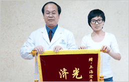

PERFECT INSPECTION CLEAR HEMORRHOIDS TYPE
治疗痔疮的前提是确定病情，对于不同类型的痔疮采用不同的治疗方法。可有效区分外痔、内痔、混合痔等。
内痔无血栓形成或纤维化时，不易扪出，但指诊的主要目的是了解直肠内有无其他病变，特别是除外直肠癌及息肉
内痔无血栓形成或纤维化时，不易扪出，但指诊的主要目的是了解直肠内有无其他病变，特别是除外直肠癌及息肉
用双手将肛门向两侧牵开，除一期内痔外，其他3期内痔多可在肛门视诊下见到。
SUIT THE SCIENTIFIC MAKING OPTIONS IS THE KEY
相当大一部分患者是“二手患者”(即在其他医院治疗过没治好的患者)，这些“二手患者”或是采用过药物治疗，或是做过传统手术，“好了”不久之后再次复发。
痔疮发病率
传统手术发病率
PPH微创术发病率
PATIENTS ACCEPTED ON THE DAY OF WORK
THE TREATMENT PROCESS
肛管剖面图
插入PPH吻合器
PPH进行切除
术后肛管剖面
THE ESTABLISHED EXPERT ONE-ON-ONE ZHUANBING SPECIALIZES IN
TREATMENT DAY NORMAL BOWEL
MACRO KANG HOSPITAL HAS SAFEGUARD
021-52833793
地址：上海市普陀区大渡河路1933号